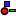
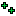

Vortex AI Editor
From C4 Engine Wiki
Contents |
VAI Editor
VAiEditor is graphical interface for editing VAI Agent behavior. VAIEditor outputs *.build, *.config and *.plan files which can be later used to construct NPC.
VAI Editor (not available for 1.0)
VAI Editor is a visual editor for Vortex AI. Editor allows to set up agent types, create architypes and plans. All data is saved in xml format, making it possible to read & edit by other applications if required. Everything editor does happens in a workspace. Workspace contains all agent settings and plans themselves. Workspace contains all possible agent Builds, agent Configurations and Plans.
Workspace
Workspace is a folder VAI Editor has been set to. For C4 users Workspace location might be /Data/GameAI/ . Newly created workspace will have no Agents, just default list of plan elements and modules copied from the library. User may define Modules and Actions in Workspace so that all created Builds have them available.
Builds
Builds are used during authoring only. Build can be viewed as a collection of plans and configurations which are guaranteed to work together (no worries about missing variables for some agent types, missing actions, etc). It can be used to set AI archetypes as in example below.
Picture shows example of Build setup in VAIEditor. Builds are Humanoids and Missiles. Humanoids were created to be used for some NPCs and it defines 2 distinct configurations : Soldier and Hostage. Both configurations are having same set of Actions and Modules available to them but can differ significantly in initial parameters set to Modules. Missiles is very simple Build, having only 3 actions (Idle, Chase and Explode) and some basic Modules. There are 2 kinds of configurations - missile and mine. 1 plan available for both configurations - Attack;
Later in the authoring process it is easy to add configuration for Sniper by replicating Soldier but some tweaks in initial parameters of VWeaponSystem module to enforce camping.
Plan in VAIEditor
Actions
Agent interacts with world using Actions. Actions can implement things like "pursuit", "attack" or "shoot target".
While action is running, success and failure conditions are being checked.
Each action can have built in success and failure conditions or can rely on added Expressions by user.
Expressions
Expressions can be used to control execution of Plan elements they are attached to. Expressions can use similar syntax that C4 uses for its expressions within C4 scripts and use variables that are written to the blackboard. List of Expressions
| Icon | Name | Function |
| Start Condition | Starting rule for any Plan element it is attached to. | |
| Success Condition | Contains rule for success of the Action | |
| Failure Condition | Failure rule of the Action | |
| Utility Element | Special Expression used to calculate utility for Plan element. Utility is used by Selector to choose the best child. | |
| Strategy Element | Variable to be maximized (for Planner element) | |
| Goal | List of variables with values plan should work towards (for Planner element) | |
 | Resource Element | Type of precondition which can change state of the blackboard. |
 | Result Element | Decorator for writing variables inside blackboard upon completion or beginning of the Action |
| FSM Transition | Defines a state transition for a child of FSM node |
Functions, constants and references may be used as part of expressions. User functions and references may be provided via custom Modules.
Composite plan elements
Composite plan elements provide switching mechanism within the subtree of actions. Most simple example is the default plan element - Generic.